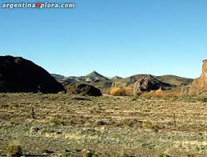
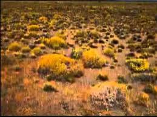

Estepas calidas
Se dan en las cercanias de los desiertos calidos y en algunas partes del altiplano con baja altitud, su temperatura puede ser de 30 grado celsius en el día y en la noche baja a menos cero grado celsius. Su precipitaciones anuales son menores a 300 milimetros pero mayores a 100 milimetros de agua.
Estepas frías
Se ubican en Asia central, en el altiplano andino a 3000 sobre el nivel del mar, suroeste de la Patagonia y en algunas partes de Siberia con inviernos extremadamente fríos, llegando a menos 40 grados celsius. Su precipitaciones son relativamente escasas llegando a un valor anual de 250 milimetros de agua.
Estepa subtropical
En Europa, algunas regiones alrededor del mar Mediterráneo tienen un clima y vegetación similar a la de otras estepas, como en Sicilia (Italia), Zaragoza o Almería (España). Así como la pampa magallánica y el Norte Chico en Chile, también tienen un clima similar al de una estepa.
Estepa Puneña o Desierto andino
La temperatura varia mucho:los días son muy calurosos y las noches, muy frías. Entre las plantas típicas de la Puna está el cardón, un cactus que alcanza varios días sin tomar agua. Los seres vivos están adaptados a este clima extremo y tienen un pelaje que los aísla del calor del día y del frío de la noche. Otros, como las chinchillas, hacen cuevas para protegerse. También hay aves, como el ñandú de la puna y el cóndor andino, en peligro de extinción
Para mejor explicacion te presentamos 3 videos para informarse y saber mas y a detalle sobre el clima de la estepa